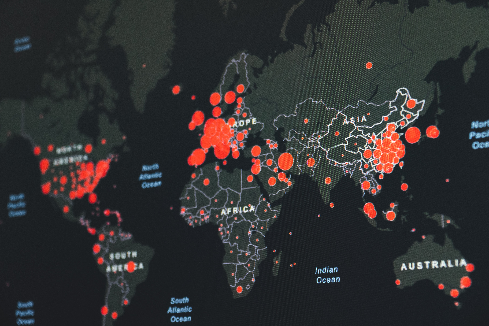

About me
Hi, my name is James and I am currently pursing a master’s degree in Data Science at University of British Columbia.
A few interesting things about me: I love to read science fiction novels like Frank Herbert’s Dune and also classic novels.
Playing or watching soccer is my biggest passion, having travelled multiple cities in Europe to witness historical games.
I am also an avid gamer, often playing strategy games and first-person shooters like Valorant.
Lastly I love to do outdoor activities, finishing half-marathon every year and cycling 50+ km every weekend.

"What does it take for a team to win the World Series?" This mini-project is an attempt to answer the question and see what are the most important qualities for the team to win the World Series.

My classmate and I will participate in kaggle competition "Predict Future Sales." Expected project completion is April as we currently progress through Spatial and Temporal Models course. Project details can be found in the link below.

This is a group project from Data Science Workflows course. Credit cards are now an extremely common means of transaction that most adult consumers possess these days. The research question that we aim to answer is: given characteristics and payment history of a customer, is he or she likely to default on the credit card payment next month?

This is a group project from Collaborative Software Development course. Since exploratory data analysis is an imperative part of every analysis, this package aims at providing efficient data scrubbing and visualization tools to perform preliminary EDA on raw data.

This is a group project from Data Visualization II course. We are currently working on building an interactive dashboard to analyze the Gapminder dataset. To be completed by the end of March.

Placeholder for the next exciting project.